回問題列表
多機連線 無法實現分類顯示備餐
Q3973
未分類
addison4869
Sep 22, 2019
站長好,我是用9.21下載的程式
可是試過機號語言 無法實現網頁所敘述的
{主選單}
飲料
飲料
麥香紅茶[$20][機號9][顏色:16750125]
冰[顏色:16763904];去冰[顏色:16777215];溫[顏色:8140];熱[顏色:255];
錫蘭紅茶[$20][機號6]
冰[顏色:16763904];去冰[顏色:16777215];溫[顏色:8140];熱[顏色:255];
秘密奶茶[$25][顏色:16750125][機號9]
冰[顏色:16763904];去冰[顏色:16777215];溫[顏色:8140];熱[顏色:255];
紅茶牛奶[$40][顏色:16750125][機號1]
冰[顏色:16763904];去冰[顏色:16777215];溫[顏色:8140];熱[顏色:255];
可可牛奶[$45]
冰[顏色:16763904];去冰[顏色:16777215];溫[顏色:8140];熱[顏色:255];
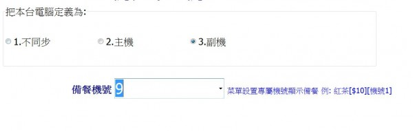
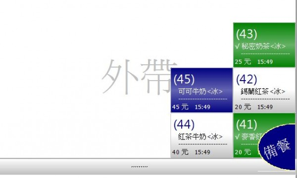
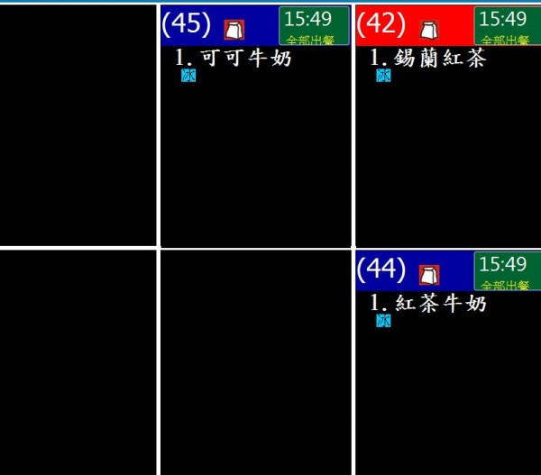
42 44 45 單子全部都會顯示在每個備餐螢幕上
41 43 單子都不會顯示在每個備餐螢幕上
我沒設定到什麼東西嗎?
7 個回答
回答 #3974
advpos
Sep 22, 2019
您好
機號識別跟電腦名稱有關,每一個機號都需要在不同的電腦
可否詳述下您有幾台windows平板或台式電腦？
回答 #3978
advpos
Sep 23, 2019
您好
確實有問題 站長已經修正 請在下載測試看看
回答 #3981
advpos
Sep 24, 2019
下載版本是3.27版 請在麻煩測試看看
如果一直是3.26 請用微軟的瀏覽器下載
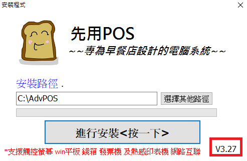
回答 #3983
anonymous
Sep 24, 2019
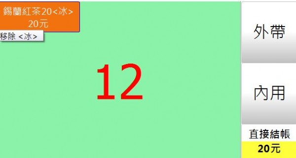
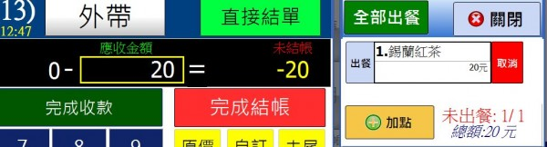
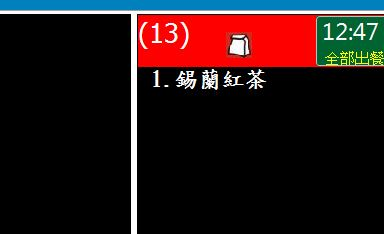
上面是POS1的點餐畫面 設機號6
回答 #3984
advpos
Sep 24, 2019
依您的菜單
錫蘭紅茶[$20][機號6]
表示只有設為[機號6]的才能看見 其他機號應該是看不見
依照您提供的畫面 如果是機號6的畫面 那就是正常的
回答 #3987
anonymous
Sep 24, 2019
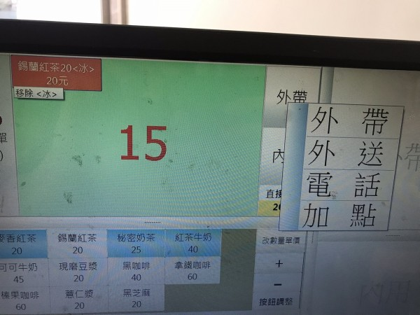
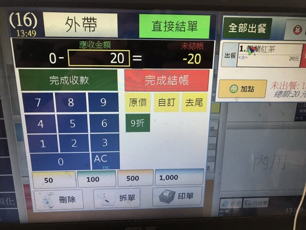
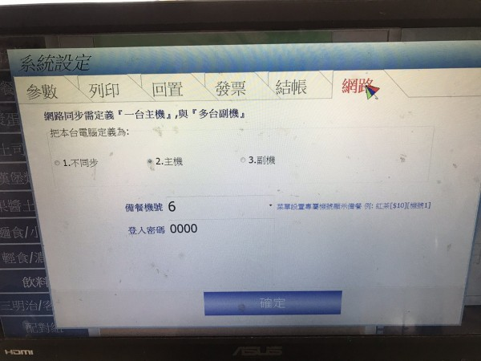
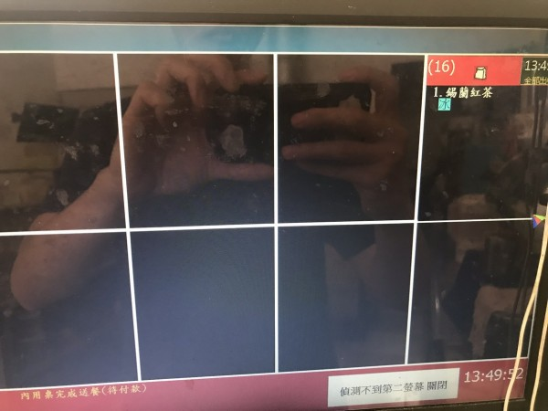
以上是POS機1 機號6
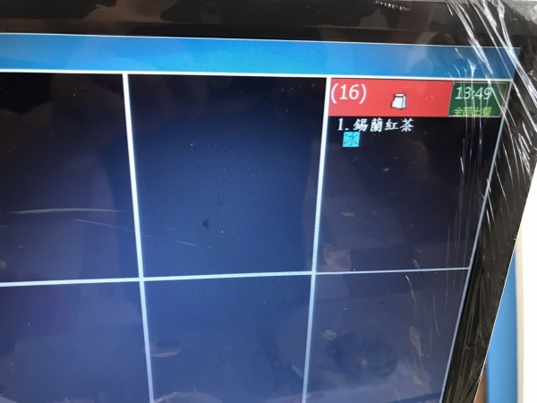
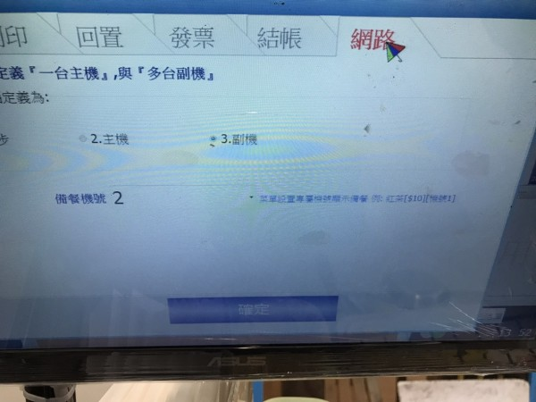
以上是POS2 機號2
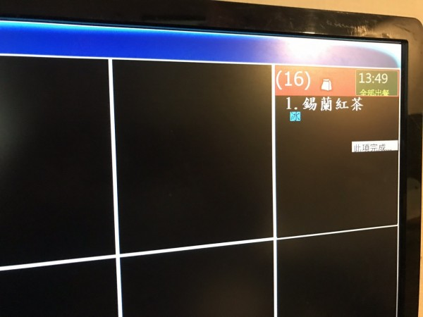
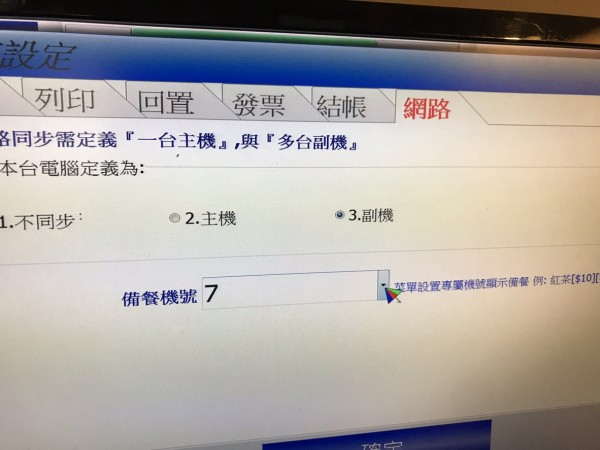
以上是POS3 機號7
以上是完整的拍 無法獨立備餐的狀態 不好意思 麻煩站長!!
回答 #3988
advpos
Sep 24, 2019
實際測試 確實有問題
已經修正 請在下載更新看看